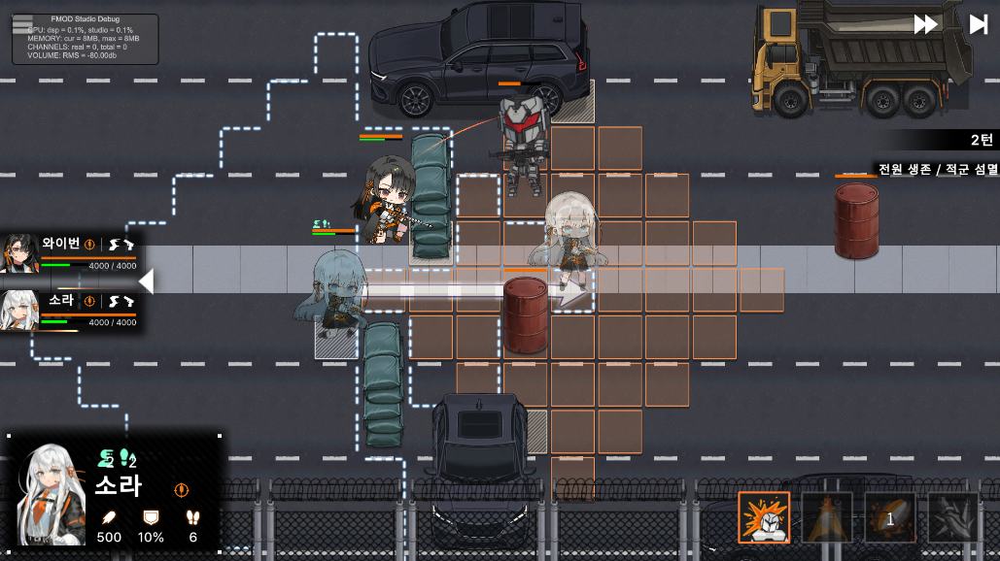
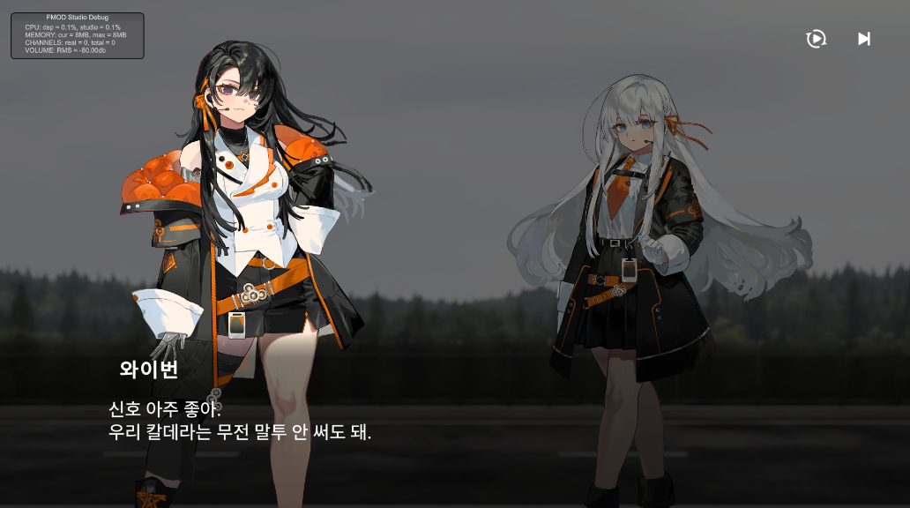
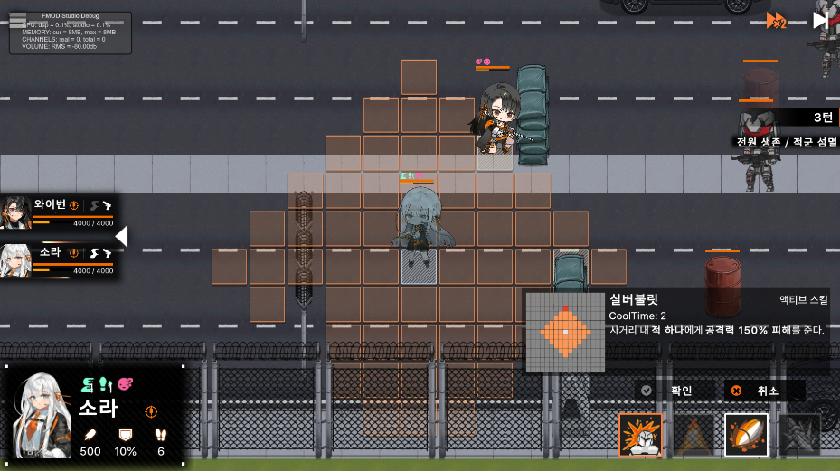

Addressable 기반 리소스 관리, 매니저 프레임워크, 데이터 기반 인프라 같은 엔진 토대부터
턴제 전투 코어·그리드 맵·분기형 컷신·연출까지 —
게임 클라이언트의 거의 모든 주요 시스템을 직접 설계하고 구현했습니다.
1년에 걸친 팀 프로젝트 Project Volcain에서 전체 커밋의 42%를 담당한 단일 최다 기여자입니다.
타일 기반 턴제 전투를 중심으로, 사기·충성도 시스템과 플레이어/몬스터/환경 오브젝트를 분리한
구조의 전술 SRPG입니다. 전투 스테이지와 로비 씬, 스토리 컷신이 유기적으로 연결되는 형태로,
저는 이 게임의 클라이언트 핵심 시스템 전반 설계와 프로그래밍을 담당했습니다.
장르
2D 전술 SRPG
엔진 / 언어
Unity 6 · C#
개발 기간
2025.07 – 진행 중
담당
클라이언트 핵심 시스템


What I Built
대표 기여 시스템
설계부터 구현·디버깅까지 직접 담당한 7개 핵심 시스템 — 각 코드 블록은 클릭하면 펼쳐집니다
📦
설계 · 구현
Addressable 기반 리소스 관리 시스템
ResourceManager.cs
모든 리소스를 Addressable 키 문자열로 추상화하고, 로드·생성·풀링·해제를 ResourceManager 한 곳으로 일원화했습니다.
label 단위 비동기 프리로드 — 게임 시작 시 그룹 단위로 로드하며 진행률 콜백으로 로딩 바 구동
접두/접미사(prefix·suffix) 기반 일괄 로드 지원으로 데이터/스프라이트 그룹 관리
로드 결과 캐싱 + 핸들 관리로 중복 로드 방지 및 일괄 Release
Instantiate()에서 풀링 여부를 한 번에 처리 — 호출부는 키만 알면 됨
AddressablesAsync PreloadPoolingHandle 관리
리소스 처리 흐름 — 호출부는 키 문자열만 알면 됩니다
① 게임 시작
label 그룹 프리로드 요청
→
② LoadAllAsync(label)
비동기 일괄 로드 진행률 콜백 → 로딩 바
→
③ 캐시 + 핸들 보관
_resources · _handles 중복 로드 방지
→
④ Instantiate("key")
키만 넘기면 생성
pooling O → Pool.Pop()pooling X → Object.Instantiate()
→
⑤ GameObject
씬·시스템에 반환
씬 전환 · Clear()
사용 끝난 그룹 정리
→
Addressables.Release()
보관한 전체 핸들 일괄 해제 → 메모리 회수
ResourceManager.csC#▸
// Addressable 리소스를 키 문자열로 추상화해 메모리/핸들 관리privateDictionary<string, Object> _resources = new();
privateDictionary<string, AsyncOperationHandle> _handles = new();
// label 단위로 모든 리소스를 비동기 프리로드 + 진행률 콜백(로딩 바)public void LoadAllAsync<T>(string label, Action<string, int, int> callback) whereT : Object
{
var opHandle = Addressables.LoadResourceLocationsAsync(label, typeof(T));
opHandle.Completed += (op) =>
{
int loadCount = 0, totalCount = op.Result.Count;
foreach (var result in op.Result)
LoadAsync<T>(result.PrimaryKey, (obj) =>
{
loadCount++;
callback?.Invoke(result.PrimaryKey, loadCount, totalCount); // 로딩 바 갱신
});
};
}
// 호출부는 키만 알면 됨 — 생성·풀링까지 한 곳에서 일원화publicGameObject Instantiate(string key, Transform parent = null, bool pooling = false)
{
GameObject prefab = Load<GameObject>(key);
if (pooling) return Managers.Pool.Pop(prefab);
GameObject go = Object.Instantiate(prefab, parent);
go.name = prefab.name;
return go;
}
포인트 — 리소스 접근을 키 기반으로 추상화하고 label 프리로드·진행률·풀링을 한 클래스에 모아, 씬/시스템 어디서든 동일한 방식으로 리소스를 다루도록 만들었습니다.
ResourceManager.cs — 접두사 일괄 로드 · 핸들 해제C#▸
// 키가 특정 접두사로 시작하는 리소스를 모두 비동기 로드 (그룹 단위 관리)public void LoadAllAsyncByPrefix<T>(string prefix, Action<string, int, int> callback) whereT : Object
{
var matchingKeys = newHashSet<string>();
foreach (var locator inAddressables.ResourceLocators)
foreach (var key in locator.Keys)
if (key isstring s && s.StartsWith(prefix) && s.Length > prefix.Length)
matchingKeys.Add(s);
int loadCount = 0, totalCount = matchingKeys.Count;
foreach (var key in matchingKeys)
LoadAsync<T>(key, (obj) => { loadCount++; callback?.Invoke(key, loadCount, totalCount); });
}
// 씬 종료 시 캐시를 비우고 보관 중인 핸들을 일괄 Release → 메모리 누수 방지public void Clear()
{
_resources.Clear();
foreach (var handle in _handles) Addressables.Release(handle);
_handles.Clear();
}
포인트 — 접두/접미사 패턴으로 리소스를 그룹 로드하고, 보관 중인 AsyncOperationHandle을 일괄 Release해 씬 전환 시 메모리를 안전하게 회수합니다.
🏗️
아키텍처
핵심 프레임워크 — 매니저 로케이터 + UI 자동 바인딩
Managers.cs · UI_Base.cs
게임 전체가 올라탈 토대를 직접 설계했습니다. 전역 서비스는 로케이터 패턴으로, UI 참조는 enum 기반 자동 바인딩으로 통일했습니다.
모든 전역 서비스를 Managers.XXX 단일 진입점으로 통일
Core(엔진) ↔ Contents(게임 로직) 계층 분리 — 의존 방향을 단방향으로 강제
Data Pipeline · Excel → JSON Serialization Sequence
호출 / 저장데이터 반환self · 내부 처리에디터/런타임 경계
Volcain · Data Pipeline
DataTransformer.cs — Excel → JSONC#▸
// 단축키(Ctrl+Shift+K) 한 번으로 20여 종 데이터 시트를 일괄 변환
[MenuItem("Tools/ParseExcel %#K")]
public static void ParseExcelDataToJson()
{
ParseExcelDataToJson<MonsterDataLoader, MonsterData>("Monster");
ParseExcelDataToJson<SkillDataLoader, SkillData>("Skill");
ParseExcelDataToJson<CutSceneDataLoader, CutSceneData>("CutScene");
// … 신규 데이터 종류는 한 줄만 등록하면 동일 파이프라인으로 처리
}
private static void ParseExcelDataToJson<Loader, LoaderData>(string filename)
whereLoader : new() whereLoaderData : new()
{
Loader loader = newLoader();
FieldInfo field = loader.GetType().GetFields()[0]; // 리플렉션으로 리스트 필드 주입
field.SetValue(loader, ParseExcelDataToList<LoaderData>(filename));
}
포인트 — 제네릭 + 리플렉션으로 데이터 종류가 늘어나도 등록 한 줄로 확장되는 파이프라인. 기획자가 작성한 Excel을 에디터 단축키로 바로 JSON화합니다.
DataManager.cs — ILoader 런타임 로드C#▸
public interfaceILoader<Key, Value>
{
Dictionary<Key, Value> MakeDict();
}
// JSON → Loader 역직렬화 → Dictionary 변환을 제네릭 한 줄로 통일publicLoader LoadJson<Loader, Key, Value>(string path) whereLoader : ILoader<Key, Value>
{
TextAsset textAsset = Managers.Resource.Load<TextAsset>(path);
returnJsonConvert.DeserializeObject<Loader>(textAsset.text);
}
public void Init()
{
MonsterDic = LoadJson<MonsterDataLoader, int, MonsterData>("MonsterData").MakeDict();
SkillDic = LoadJson<SkillDataLoader, int, SkillData>("SkillData").MakeDict();
CutSceneDic = LoadJson<CutSceneDataLoader, int, CutSceneData>("CutSceneData").MakeDict();
// … 20여 종 데이터를 ID 기반 O(1) 조회 딕셔너리로 구성
}
포인트 — ILoader 제네릭 인터페이스로 모든 데이터를 동일 패턴으로 로드하고, ID 기반 O(1) 딕셔너리로 메모리에 적재합니다. 컷신 데이터 시트(C6)도 같은 흐름을 그대로 사용합니다.
DataTransformer.cs — CSV 리플렉션 매핑C#▸
// CSV 한 줄 = 데이터 1건. 리플렉션으로 필드 타입에 맞춰 자동 매핑private staticList<LoaderData> ParseExcelDataToList<LoaderData>(string filename) whereLoaderData : new()
{
var loaderDatas = newList<LoaderData>();
string[] lines = File.ReadAllText($"…/ExcelData/{filename}Data.csv").Split("\n");
for (int l = 1; l < lines.Length; l++) // 0번 줄(헤더) 제외
{
List<string> row = ParseCsvLine(lines[l].Replace("\r", ""));
if (row.Count == 0 || string.IsNullOrEmpty(row[0])) continue;
LoaderData data = newLoaderData();
var fields = GetFieldsInBase(typeof(LoaderData));
for (int f = 0; f < fields.Count; f++)
{
FieldInfo field = data.GetType().GetField(fields[f].Name);
object value = field.FieldType.IsGenericType // List<T> 컬럼이면
? ConvertList(row[f], field.FieldType) // → 리스트 변환
: ConvertValue(row[f], field.FieldType); // → 단일 값 변환
field.SetValue(data, value);
}
loaderDatas.Add(data);
}
return loaderDatas;
}
포인트 — CSV 각 컬럼을 데이터 클래스 필드 타입(단일/List)에 맞춰 리플렉션으로 자동 매핑. 컷신·스킬 등 새 시트도 데이터 클래스만 선언하면 별도 파서 없이 처리됩니다.
SRPG의 심장인 턴 진행 로직을 직접 설계했습니다. 아군·적·추가 턴·광폭화 등 여러 페이즈를 하나의 상태 흐름으로 관리합니다.
큐 기반 TurnManager — 턴 순서·페이즈 전환·종료 처리 (A1)
Wave 시스템 — 클리어 감지 후 다음 웨이브/스테이지 로드 흐름 (A2)
몬스터 AI — 아군 위치 기준 최적 시나리오(타겟·이동·스킬) 계산 (A4)
스킬 시스템 — SkillBase 추상화, 범위 ShapeParser, 쿨타임/지속시간 관리 (A6)
버프 / CC(상태이상) 효과의 턴 단위 duration 처리 (A7)
Queue TurnState PhaseUniTask 비동기AISkill / Buff
TurnManager.cs — 비동기 턴 전환C#▸
public async void PlayerTurnTransition()
{
await UniTask.WaitUntil(() => !Managers.Game.IsPerforming); // 연출 중이면 대기await UniTask.WaitUntil(() =>
activePlayerList.All(p => p.CameraReady && !p.UsingSkill)); // 스킬 연출 중이면 대기switch (CurrentPhase)
{
case TurnPhase.PlayerControl:
if (extraTurnPlayer.Count > 0) StartExtraTurn();
else if (Managers.Map.StageComponent.HasNextStage) SetEnemyTurnStart();
break;
case TurnPhase.PlayerExtra:
SetEnemyTurnStart();
break;
}
}
포인트 — 연출·스킬 재생이 끝날 때까지 UniTask로 비동기 대기한 뒤 턴 페이즈를 전환. 연출과 턴 로직이 동시에 진행되며 생기던 경합(race) 문제를 제거했습니다.
Senario.cs · Creature.cs — 몬스터 AI 점수 시스템 (A4)C#▸
/// AI 의사결정의 핵심 — 이동·타겟·스킬·유불리를 하나의 점수로 환산public classSenario
{
public float senarioValue; // 종합 점수publicSkillComponent targetSkill; // 사용할 스킬publicOverlayTile targetTile; // 공격 목표publicOverlayTile positionTile; // 이동할 위치publicCreature targetCharacter;
}
// 이동 가능한 모든 타일에 [이득·위험·전략·피격수] 4축 점수를 매겨 최적 행동 선택public void CalculateBestSenario()
{
Managers.Map.GetTilesInRange(currentStandingTile.gridLocation, ActualMovementRange, MovementRangeTiles);
// _tileDataBuffer[tile] = { Benefit, Risk, Strategy, AttackablePlayerCount }if (CurrentCCState == ECrowdConrolState.None)
{
CalculateMonsterAttackTileScores(formation == EFormation.Kiting); // 이득(공격)
CalculatePlayerAttackRiskScores(); // 위험(피격)// 고저차·카이팅 거리 등 전략 점수 가산 …
}
ApplyBestSenario(); // 최고 점수의 타일·스킬을 실제 행동으로 확정
}
포인트 — 몬스터 성향(Aggro·Preservation·Formation)과 지형(고저차)을 가중치로 환산해, 이동 가능 타일마다 4축 점수를 매기고 최댓값을 행동으로 선택하는 효용 기반(utility) AI입니다.
// 모든 스킬의 조상 — 공통 흐름은 베이스에 고정, 세부 효과는 파생 클래스가 overridepublic abstract classSkillBase : InitBase
{
publicCreature Owner { get; protected set; }
publicData.SkillData SkillData { get; protected set; } // 스킬 데이터 시트public int RemainCoolTime { get; set; }
public int RemainDuration { get; set; }
public virtual void SetInfo(Creature owner, int skillTemplateID)
{
Owner = owner;
SkillData = Managers.Data.SkillDic[skillTemplateID]; // ID로 데이터 주입
}
public virtual void BeginSkill() { } // 시전 전 사전 정리 (override)public virtual void DoSkill() { } // 실제 스킬 효과 (override)public void CountdownCooldown() => RemainCoolTime = SkillData.CoolTime;
}
포인트 — 공통 로직(데이터 주입·쿨타임)을 베이스에 고정하고 개별 스킬은 BeginSkill/DoSkill만 override하는 템플릿 메서드 구조. 스킬 추가 시 데이터 시트 + 파생 클래스만 작성하면 됩니다.
Skill System · Execution Sequence
호출 / 실행self · 내부 처리단계 구분
Volcain · Skill Sequence
EffectBase.cs · EffectComponent.cs — 효과 시스템 (A7)C#▸
Gameplay · Effect Class Hierarchy
EffectBaseBuffBaseCCBase직접 상속상속
Volcain · Effect Hierarchy
① 데이터 구조 — 모든 효과의 조상. 데이터 시트 정보·남은 턴·원본 스킬을 보관하고, 스탯 Modifier 부착을 공통으로 처리합니다.
// 버프·디버프·CC·DoT의 조상public classEffectBase : BaseObject
{
publicCreature Owner;
publicSkillBase Skill; // 이 효과를 만든 원본 스킬publicEffectData EffectData; // 효과 데이터 시트public int Duration { get; set; } // 남은 턴 수// 데이터 ID로 효과 정보 주입 (지속시간·원본 스킬 등)public virtual void SetInfo(int templateID, int applyTemplateID, Creature owner, EEffectSpawnType spawnType, SkillBase skill) { /* … */ }
public virtual void ApplyEffect() { } // 효과 적용 (override)public virtual bool ClearEffect(EEffectClearType clearType) { /* … Despawn */ }
// 스탯 Modifier 부착 — Amount / PercentAdd / PercentMult를 데이터로 적용protected void AddModifier(CreatureStat stat, object source, int order = 0) { /* … */ }
}
② 리플렉션 생성 — 데이터 시트의 클래스명으로 위 효과들을 코드 수정 없이 인스턴스화합니다.
// 데이터 시트의 ClassName으로 효과 클래스를 리플렉션 생성 — 코드 수정 없이 버프/CC 추가publicEffectBase GenerateEffect(int effectId, int effectApplyId, EEffectSpawnType spawnType, SkillBase skill)
{
if (Managers.Data.EffectDic.TryGetValue(effectId, out var effectData) == false) return null;
if (Managers.Data.EffectApplyDic.TryGetValue(effectApplyId, out var applyData) == false) return null;
Type effectType = Type.GetType(effectData.ClassName); // 예: "AttackBuff", "Aggravation"if (effectType == null) { Debug.LogError($"Effect Type not found: {effectData.ClassName}"); return null; }
// … 컴포넌트로 부착 후 SetInfo — 턴마다 지속시간 감소return effect;
}
포인트 — 효과 클래스명을 데이터 시트에 두고 리플렉션으로 인스턴스화 → 새 버프/CC는 클래스만 추가하면 데이터로 부착됩니다. 적용·중첩(UniqueGroup)·턴 단위 지속시간 감소를 EffectComponent가 일괄 관리합니다.
Effect System · Reflection Generation Sequence
호출 / 실행self · 내부 처리반환단계 구분
Volcain · Effect Sequence
StageComponent.cs — Wave / 스테이지 진행 (A2)C#▸
// 현재 인덱스 + 1 이 존재하면 다음 웨이브/스테이지가 남아있음public bool HasNextStage => CurrentStageIndex + 1 < Stages.Count;
// 스테이지 클리어 시 호출 — 다음이 있으면 전환, 없으면 전체 클리어 이벤트 발행private void OnStageClear(Stage clearedStage)
{
clearedStage.OnStageClear -= OnStageClear;
int nextIndex = CurrentStageIndex + 1;
if (HasNextStage)
_stageTransitionCoroutine = StartCoroutine(CoTransitionToNextStage(nextIndex));
else
OnAllStagesClear?.Invoke(); // 모든 웨이브 클리어
}
포인트 — 웨이브(스테이지)를 인덱스로 관리해 클리어마다 다음으로 전환하고, 마지막이면 전체 클리어 이벤트를 발행. TurnManager는 HasNextStage를 보고 턴 흐름을 분기합니다.
🗺️
설계 · 구현 · 툴
그리드 기반 타일 시스템
MapManager.cs · OverlayTile.cs · MapEditor.cs
Unity 그리드 기반으로 타일 인터랙션 전반을 구축했습니다. 이동·스킬 범위 계산을 GC 할당 없이 처리하도록 최적화했습니다.
Tilemap_Collision 파이프라인 — 에디터에서 충돌 타일맵을 txt로 직렬화하고, Addressable로 로드해 런타임 충돌 판정에 사용
OverlayTile · PathFinder — A* 점수(G/H/F)를 보관하는 타일 + 그 점수로 최단 경로를 찾는 길찾기 (B3)
GC-프리 BFS — 멤버 버퍼 재사용으로 범위 계산 중 GC 스파이크 제거 (B4)
이동 범위 외곽선 비트마스크 — 4방향 인접 판정을 비트로 합쳐 외곽선 스프라이트를 선택하는 알고리즘 연구
ShapeParser — 텍스트로 정의한 스킬 형태(고정·직선)를 캐릭터 방향에 맞게 회전해 영향 타일 계산
MapEditor.cs · MapManager.cs — Tilemap_Collision → Addressable 충돌 데이터C#▸
① MapEditor.cs — 에디터 메뉴에서 선택한 맵 프리팹의 Tilemap_Collision을 순회해 충돌 데이터를 txt로 내보냅니다.
// Editor: 선택한 맵에서 Tilemap_Collision을 찾아 클라이언트/서버 공용 txt로 직렬화
[MenuItem("Tools/MapGenerate %#m")]
private static void GenerateMap()
{
foreach (GameObject go in Selection.gameObjects)
{
Tilemap tile = Util.FindChild<Tilemap>(go, "Tilemap_Collision", true);
using (var writer = File.CreateText($"Assets/@Resources/Data/MapData/{go.name}Collision.txt"))
{
writer.WriteLine(tile.cellBounds.xMin); writer.WriteLine(tile.cellBounds.xMax);
writer.WriteLine(tile.cellBounds.yMin); writer.WriteLine(tile.cellBounds.yMax);
writer.WriteLine(tile.cellBounds.zMin); writer.WriteLine(tile.cellBounds.zMax);
for (int z = tile.cellBounds.zMin; z <= tile.cellBounds.zMax; z++)
{
for (int y = tile.cellBounds.yMax; y >= tile.cellBounds.yMin; y--)
{
for (int x = tile.cellBounds.xMin; x <= tile.cellBounds.xMax; x++)
{
TileBase tileBase = tile.GetTile(newVector3Int(x, y, z));
writer.Write(tileBase == null ? MAP_TOOL_WALL :
tileBase.name.Contains("O") ? MAP_TOOL_NONE :
tileBase.name.Contains("Env") ? MAP_TOOL_ENV :
tileBase.name.Contains("Start") ? MAP_TOOL_StartPos :
MAP_TOOL_SEMI_WALL);
}
writer.WriteLine();
}
}
}
}
}
② MapManager.cs — Addressable에 등록된 {mapName}Collision TextAsset을 로드해 충돌 배열로 복원합니다.
// Runtime: Addressables key "{mapName}Collision"로 TextAsset 로드 후 충돌 배열 구성void ParseCollisionData(GameObject map, string mapName)
{
Util.FindChild(map, "Tilemap_Collision", true)?.SetActive(false);
TextAsset txt = Managers.Resource.Load<TextAsset>($"{mapName}Collision");
StringReader reader = new(txt.text);
_MinX = int.Parse(reader.ReadLine()); _MaxX = int.Parse(reader.ReadLine());
_MinY = int.Parse(reader.ReadLine()); _MaxY = int.Parse(reader.ReadLine());
_MinZ = int.Parse(reader.ReadLine()); _MaxZ = int.Parse(reader.ReadLine());
int xCount = _MaxX - _MinX + 1, yCount = _MaxY - _MinY + 1;
for (int z = 0; z < _MaxZ - _MinZ + 1; z++)
{
ECellCollisionType[,] collision = newECellCollisionType[xCount, yCount];
for (int y = 0; y < yCount; y++)
{
string line = reader.ReadLine();
for (int x = 0; x < xCount; x++)
collision[x, y] = line[x] == MAP_TOOL_WALL ? ECellCollisionType.Wall :
line[x] == MAP_TOOL_SEMI_WALL ? ECellCollisionType.SemiWall :
ECellCollisionType.None;
}
_collisions.Add(collision);
}
}
③ MapManager.cs — 복원된 충돌 배열에서 이동 가능한 셀만 OverlayTile로 생성해 런타임 판정에 사용합니다.
// None 셀만 OverlayTile로 생성해 이동/스킬/경로탐색에서 실제 충돌 판정 기준으로 사용private void SpawnOverlayTileByTileData()
{
// _collisions[z] 배열을 순회하며 이동 가능한 셀만 OverlayTile로 변환
...
if (_collision[x, y] == ECellCollisionType.None)
{
Vector3Int gridPos = new(_MinX + x, _MaxY - y, _MinZ + z);
OverlayTile tile = Managers.Object.SpawnTileObject("DevOverlayTile", Managers.Object.OverlayTileRoot).GetComponent<OverlayTile>();
tile.gridLocation = gridPos;
mapDict.Add(gridPos, tile);
}
}
포인트 — 기획자가 씬의 Tilemap_Collision에 찍은 타일을 0/1/2/3/4 문자 맵으로 저장하고, DevMapCollision·00_TutorialCollision 같은 Addressable TextAsset으로 로드합니다. 런타임에서는 Wall/SemiWall/None으로 복원한 뒤, 이동 가능한 None 셀만 OverlayTile과 mapDict에 등록해 이동·스킬·경로탐색의 충돌 기준으로 사용합니다.
Map System · Editor → Collision Data → Runtime Sequence
호출 / 실행self · 내부 처리반환단계 구분
Volcain · Map Pipeline Sequence
이동 범위 외곽선 추출 — 4방향 비트마스크 알고리즘C#▸
문제 — 이동 가능 범위를 면(面)으로 가득 칠하지 않고 영역의 외곽선만 그리고 싶었습니다. 핵심은 "각 타일의 4방향 이웃 중 어디가 범위 바깥인가"를 판별해, 그 조합에 맞는 외곽선 스프라이트(직선·코너·ㄷ자·단독)를 고르는 것입니다.
// 4방향에 겹치지 않는 비트값 부여 → 빈 방향만 OR로 합치면 고유한 mask가 나온다// 위=1(0001) 오른쪽=2(0010) 아래=4(0100) 왼쪽=8(1000)// ex) 위+왼쪽이 비면 1|8 = 9 → '왼쪽 위 코너' 스프라이트// 위+오른쪽+아래가 비면 1|2|4 = 7 → '오른쪽을 감싸는 ㄷ', 15 = 단독 타일private int CalculateMoveOutlineMask(OverlayTile tile, HashSet<OverlayTile> moveSet)
{
Vector3Int pos = tile.gridLocation; // 월드 좌표가 아닌 '셀 좌표' 기준int mask = 0;
if (!IsMoveTile(pos + newVector3Int(0, 1, 0), moveSet)) mask |= 1; // 위가 바깥if (!IsMoveTile(pos + newVector3Int(1, 0, 0), moveSet)) mask |= 2; // 오른쪽이 바깥if (!IsMoveTile(pos + newVector3Int(0, -1, 0), moveSet)) mask |= 4; // 아래가 바깥if (!IsMoveTile(pos + newVector3Int(-1, 0, 0), moveSet)) mask |= 8; // 왼쪽이 바깥return mask; // 0=내부 타일(외곽 없음), 1~15=방향 조합별 외곽선 번호표
}
// 이웃 셀이 '현재 이동 가능 집합'에 들어있는지 — 전체 맵 존재 여부가 아니라 범위 포함 여부가 기준private bool IsMoveTile(Vector3Int pos, HashSet<OverlayTile> moveSet)
=> Managers.Map.mapDict.TryGetValue(pos, out var t) && moveSet.Contains(t);
연구 포인트 — 4방향에 1·2·4·8처럼 겹치지 않는 비트를 주면 OR로 합쳐도 어느 방향이 켜졌는지 되읽을 수 있어, 16가지 조합을 mask → 스프라이트 테이블 한 번 조회로 매핑할 수 있습니다. 멤버십 판정은 List.Contains(O(N)) 대신 재사용 HashSet으로 전체 O(N)을 유지하고, 매 프레임이 아니라 이동 범위가 바뀌는 시점에만 계산하도록 dirty 갱신을 설계해 hover 중 반복 계산을 막았습니다.
OverlayTile.cs · PathFinder.cs — A* 길찾기 (B3)C#▸
G✕✕S
F = 6G 2 (시작 거리) + H 4 (목표 추정)
열린 목록에서 F가 가장 작은 타일부터 확장하고, 벽(Blocked/Env)은 건너뜁니다. 목표에 도달하면 previousTile을 거꾸로 따라가 경로를 복원합니다.
S · 시작G · 목표탐색된 최단 경로✕ · 벽(이동 불가)
① 데이터 — 각 타일(OverlayTile)이 A* 점수(G·H·F)와 역추적 포인터를 직접 보관합니다.
public classOverlayTile : InitBase
{
public int G; // 시작 → 현재 거리public int H; // 현재 → 목표 거리public int F { get { return G + H; } } // A* 최종 스코어publicETileState TileState = ETileState.None; // None/Blocked/Reserved/EnvpublicOverlayTile previousTile; // 경로 역추적용publicVector3Int gridLocation;
publicCreature overCreature { get; private set; } // 타일 위 캐릭터publicEnv OverEnv { get; private set; } // 타일 위 환경물
}
② 탐색 — 위 점수를 이용해 열린 목록에서 F가 최소인 타일을 확장하며 최단 경로를 찾습니다.
// 재사용 버퍼 — 매 탐색마다 컬렉션을 새로 만들지 않아 GC 할당 제거private readonlyList<OverlayTile> _openList = new(32);
private readonlyHashSet<OverlayTile> _closedList = new();
private readonlyList<OverlayTile> _surroundingBuffer = new(8);
// 시작 → 목표 최단 경로. inRangeTiles로 탐색 공간을 '이동 가능 범위'로 한정publicList<OverlayTile> FindPath(OverlayTile start, OverlayTile end, List<OverlayTile> inRangeTiles)
{
_openList.Clear(); _closedList.Clear();
if (!inRangeTiles.Contains(end) && inRangeTiles.Count > 0)
return newList<OverlayTile>(); // 도달 불가 목표는 즉시 컷
_openList.Add(start);
while (_openList.Count > 0)
{
// LINQ OrderBy 대신 수동 최솟값 탐색 → Enumerator 할당 제거OverlayTile current = _openList[0];
for (int i = 1; i < _openList.Count; i++)
if (_openList[i].F < current.F) current = _openList[i];
_openList.Remove(current); _closedList.Add(current);
if (current == end) return GetFinishedList(start, end); // previousTile 역추적
Managers.Map.GetSurroundingTiles(current.gridLocation, _surroundingBuffer);
foreach (var tile in _surroundingBuffer)
{
if (tile.TileState == ETileState.Blocked || tile.TileState == ETileState.Env
|| _closedList.Contains(tile)) continue;
tile.G = current.G + 1; // 시작→현재 실제 거리
tile.H = GetManhattenDistance(end, tile); // 현재→목표 휴리스틱
tile.previousTile = current;
if (!_openList.Contains(tile)) _openList.Add(tile);
}
}
return newList<OverlayTile>();
}
// 대각 이동이 없는 그리드라 맨해튼 거리가 가장 효율적인 휴리스틱public int GetManhattenDistance(OverlayTile a, OverlayTile b)
=> Mathf.Abs(a.gridLocation.x - b.gridLocation.x) + Mathf.Abs(a.gridLocation.y - b.gridLocation.y);
포인트 — OverlayTile이 들고 있는 G/H/F 스코어로 A*를 돌려 클릭 지점까지의 최단 경로를 구합니다. inRangeTiles로 탐색 공간을 이동 범위로 한정해 불필요한 확장을 막고, open/closed 리스트를 멤버 버퍼로 재사용해 길찾기 중 GC를 제거했습니다. 또한 LINQ OrderBy 대신 수동 최솟값 탐색으로 Enumerator 할당까지 없앴습니다.
ShapeParser.cs — 텍스트 기반 스킬 범위C#▸
설계 — 스킬 모양을 코드가 아닌 텍스트 파일로 정의합니다(1=원점, 2=고정 타일, 3·4=직선 확장). 기획자가 숫자만 찍어 새 범위를 만들 수 있고, 같은 형태를 캐릭터가 바라보는 방향에 맞춰 회전해 적용합니다.
① 텍스트 정의
0000000000122000000000000
→
② 캐릭터 방향에 맞춰 회전
▶ 오른쪽
◀ 왼쪽
▲ 위
▼ 아래
1 · 원점(캐릭터 기준점)2 · 영향받는 타일0 · 빈 칸

인게임 적용 화면 — 텍스트로 정의한 형태가 캐릭터 방향에 맞춰 타일에 표시된 모습
// 스킬이 영향을 줄 모든 타일을 계산하는 진입점publicList<OverlayTile> GetAbilityTileLocations(OverlayTile abilityPos, TextAsset shape, Vector2Int charPos)
{
int[,] abilityMap = ParseTxtAbilityToIntArray(shape); // 텍스트 → 2D 정수 배열List<Vector2> origin = FindLocationsInArray(1, abilityMap, null); // 1 = 형태의 원점var affected = newList<Vector2Int>();
if (SearchAbilityMapForValue(2, abilityMap)) // 2 = 고정 형태 (십자·사각 등)
affected.AddRange(GetShapeAbilityTiles(abilityPos, charPos, abilityMap, origin));
if (SearchAbilityMapForValue(3, abilityMap)) // 3 = 맵 끝까지 뻗는 직선 (레이저·관통)
affected.AddRange(GetLineAbilityTiles(abilityPos, charPos, abilityMap, origin));
// 좌표를 실제 타일로 변환 (높이차 z±1 포함, 맵 밖은 필터링)var tiles = newList<OverlayTile>();
foreach (var loc in affected)
for (int z = -1; z < 2; z++)
if (Managers.Map.TryGetActiveOverlayTile(newVector3Int(loc.x, loc.y, abilityPos.gridLocation.z + z), out var t))
tiles.Add(t);
return tiles.Count == 0 ? newList<OverlayTile> { abilityPos } : tiles;
}
// 캐릭터→대상 방향이 우세한 축을 보고 형태 오프셋을 회전시켜 실제 좌표로 변환publicVector2Int GetAffectedTile(refVector2Int origin, Vector2Int offset, Vector2Int charPos)
{
Vector2Int abs = new(Mathf.Abs(origin.x - charPos.x), Mathf.Abs(origin.y - charPos.y));
Vector2Int dir = origin - charPos;
if (abs.x >= abs.y) // 좌우 방향이 우세 → 오프셋 그대로return dir.x <= 0 ? origin - offset : origin + offset;
// 상하 방향이 우세 → x·y 스왑(90° 회전)return dir.y <= 0
? newVector2Int(origin.x - offset.y, origin.y - offset.x)
: newVector2Int(origin.x + offset.y, origin.y + offset.x);
}
포인트 — 스킬 형태를 데이터(텍스트)로 분리해 코드 수정 없이 새 범위를 추가할 수 있게 했습니다. 캐릭터와 대상의 방향 벡터에서 우세 축을 판별해 형태를 90° 단위로 회전시키므로, 하나의 정의로 상하좌우 모든 방향의 스킬 범위를 처리합니다.
CustomTile.cs · MapEditor.cs — 데이터 기반 맵 툴 (B5·B7)C#▸
① 데이터 시트
IDTypeSprite101Monster👾201Env🌳—Player🚩
→툴 실행
② CustomTile 자동 생성
⚙️CreateObjectOnTile()Ctrl+Shift+O
👾Monster · 101
🌳Env · 201
🚩StartPos
→그리기
③ 타일맵에 배치 → 스폰
🚩👾👾🌳
👾 몬스터🚩 아군 시작 위치🌳 환경물
// 비프로그래머(기획)가 타일 팔레트로 오브젝트를 '찍어' 배치하는 데이터 타일public classCustomTile : Tile
{
publicDefine.EObjectType ObjectType; // Monster / Player / Env …public int DataId; // 스폰할 데이터 IDpublic bool isStartPos = false; // 아군 시작 위치public bool isWayPoint = false;
}
// [에디터 툴] 데이터 시트를 순회하며 CustomTile 에셋을 자동 생성 (Ctrl+Shift+O)
[MenuItem("Tools/Create Object Tile Asset %#o")]
public static void CreateObjectOnTile()
{
var dic = LoadJson<MonsterDataLoader, int, MonsterData>("MonsterData").MakeDict();
foreach (var data in dic.Values)
{
CustomTile tile = ScriptableObject.CreateInstance<CustomTile>();
tile.DataId = data.DataId;
tile.ObjectType = EObjectType.Monster;
tile.sprite = LoadSprite(data.IconImage);
AssetDatabase.CreateAsset(tile, $"…/Monster/{data.DataId}_{data.DescriptionTextID}.asset");
}
}
포인트 — 데이터 ID·타입을 담은 CustomTile을 에디터 툴이 시트에서 자동 생성 → 기획자가 타일맵에 '그리듯' 몬스터·시작위치·환경물을 배치하면 런타임이 그대로 스폰합니다.
🎬
설계 · 구현
분기형 컷신 시스템
CutSceneManager.cs · TimelineManager.cs
선택지에 따라 흐름이 갈리는 분기형 컷신과 Timeline 연동 연출을 구현했습니다. 데이터 시트 기반으로 동작합니다.
포인트 — VFX도 VFXData ID로 호출 — 스킬·피격·폭발 등에서 ID만 넘기면 Addressable 프리팹을 생성·설정합니다. (셰이더는 Shader Graph 에셋으로 제작되어 별도 C# 코드가 없습니다.)
Engineering Highlights
문제 해결 사례
각 사례에 배경 설명을 먼저 두고 증상 → 원인 → 해결 → 결과로 정리했습니다. 프로젝트를 모르는 분도 어떤 문제를 어떻게 파고들어 해결했는지 따라올 수 있도록 썼습니다.
타이밍 웨이브 전환 시 다음 턴이 멈추는 버그
이 게임은 화면의 적을 모두 처치하면 다음 웨이브로 넘어가고, 특정 조건에서 아군이 강해지는 '광폭화' 상태로 들어가며 안내 팝업이 뜹니다.
증상
특정 스킬로 마지막 적을 처치하고 다음 웨이브로 넘어가면, 광폭화 안내 팝업이 뜨지 않고 플레이어가 다시 행동할 수도 없게 되는 현상(행동 횟수가 리셋되지 않음).
원인
다음 턴을 준비하는 코드는 "스킬 연출이 완전히 끝났는가"를 확인한 뒤에야 진행됐었습니다. 그런데 한 캐릭터의 공격 애니메이션이 실제로 적이 맞는 순간(1.16초)보다 1.77초나 더 길게(2.93초) 재생되도록 만들어져 있었습니다. 적은 이미 죽었는데도 연출이 안 끝난 것으로 판단되어, 다음 턴 준비 단계 전체가 영영 시작되지 못했습니다.
해결
① 근본 원인 제거: 애니메이션 데이터에서 불필요하게 늘어져 있던 마지막 구간을 잘라 길이를 2초로 줄여, 타격 직후 연출이 제때 끝나도록 했습니다. ② 안전장치: 그래도 막힐 경우 1초 뒤 강제로 빠져나가게 하고, 무엇이 진행을 막았는지 로그로 남겨 재발 시 바로 추적할 수 있게 했습니다.
결과
웨이브 전환 → 광폭화 → 튜토리얼이 항상 정상 순서로 동작. "연출 길이가 게임 로직을 멈출 수 있다"는 구조적 위험까지 문서로 정리해 재발을 예방했습니다.
TurnManager.csC#▸
// 웨이브 클리어 후 새 웨이브의 적 턴을 '행동 없이' 넘기고 다음 아군 턴 시작public async void SkipEnemyTurnAfterWaveClear()
{
await UniTask.WaitUntil(() => !Managers.Game.IsPerforming);
await UniTask.WaitUntil(() => activePlayerList.All(p => p.CameraReady && !p.UsingSkill));
CurrentPhase = TurnPhase.EnemyTurn;
MarkActiveMonstersMoved(); // 새 웨이브 몬스터를 '이동 완료'로 표시 → 행동 건너뜀
StartEnemyTurn(false); // false: 다음 아군 턴 전환 연출 생략
}
private void MarkActiveMonstersMoved()
{
foreach (var monster in activeMonsterList)
if (monster != null && monster.IsAlive) monster.IsMoved = true;
}
핵심 — 새 웨이브의 적을 이미 행동한 상태로 표시하고 연출 플래그를 분리해, 웨이브 경계에서의 턴 경합을 제거했습니다.
동기화 컷신 중 카메라가 제멋대로 움직이는 문제
전투 화면의 카메라는 평소엔 캐릭터를 자동으로 따라가고 전투 시엔 확대됩니다. 컷신(연출 장면)이 재생될 땐 미리 정해둔 위치·크기로 카메라가 고정되어야 합니다.
증상
컷신이 재생되는 도중에도 평소의 카메라 자동 추적과 전투 확대 동작이 끼어들어, 카메라 위치와 화면 크기가 연출 의도와 어긋나고 컷신 건너뛰기도 제대로 동작하지 않음.
원인
카메라를 움직이는 코드가 여러 곳(자동 추적, 전투 확대 애니메이션, 컷신)에 흩어져 있어 동시에 실행됐습니다. 게다가 먼저 시작된 카메라 이동이 뒤늦게 끝나면서 컷신이 설정한 위치를 다시 덮어쓰는 일도 있었습니다.
해결
컷신 중에는 외부의 카메라 조작을 한곳에서 차단하는 '잠금' 장치를 두고, 진행 중이던 이동에 버전 번호를 매겨 한 박자 늦게 도착한 명령은 무시하도록 했습니다. 여기에 매 프레임 카메라를 정해진 위치로 다시 고정해, 어떤 경로로도 연출이 흔들리지 않게 했습니다.
결과
'잠금 + 늦은 명령 무효화 + 매 프레임 고정'의 3중 안전장치로, 어느 경로의 카메라 간섭도 컷신 연출을 깨뜨리지 못하게 만들었습니다.
CameraController.csC#▸
private int _cameraTweenVersion; // 진행 중 트윈을 무효화하기 위한 버전 카운터private bool IsCameraControlBlocked()
=> _isTimelineCameraControl || _isCameraControlLocked
|| (Managers.CutScene != null && Managers.CutScene.IsPlaying);
// 컷신/타임라인 진입 시 모든 카메라 트윈을 죽이고 버전을 올려 stale 콜백 차단private void KillAllCameraTweens(bool notifyPendingCreature = true)
{
_cameraTweenVersion++;
transform.DOKill();
_currentSequence?.Kill();
}
// 매 프레임 컷신 카메라 상태를 강제 고정 (외부 간섭 무시)private void EnforceCutSceneCameraControl()
{
if (_isCameraControlLocked == false) return;
transform.position = _lockedCameraPosition;
if (_lockedCamera != null)
_lockedCamera.orthographicSize = _lockedCameraOrthographicSize;
}
핵심 — '잠금 플래그 + 트윈 버전 무효화 + 매 프레임 강제 고정'의 3중 안전장치로, 어떤 경로의 카메라 간섭도 컷신 연출을 깨지 못하게 했습니다.
성능 마우스를 올려두기만 해도 끊기는 프레임
전술 게임이라 마우스를 타일 위에 올리면 이동 가능 범위·스킬 사거리·예상 경로가 실시간으로 표시됩니다. 이 계산을 처리하는 코드가 성능 병목이었습니다.
증상
Unity 프로파일러(성능 측정 도구)로 보면 마우스 처리 코드가 매 프레임 큰 비용을 차지했고, 마우스를 같은 칸 위에 가만히 올려둬도 프레임이 떨어졌습니다.
원인
프로파일러로 원인을 역추적해보니, 마우스가 가리키는 대상이 바뀌지 않았는데도 매 프레임 ① 무엇을 가리키는지 Raycast 검사 ② 이동·스킬 범위 재계산 ③ 최단 경로 재탐색 ④ 타일 표시 갱신을 모두 반복하고 있었습니다. 게다가 실제 스킬 사거리와 미리보기용 사거리가 같은 데이터를 공유해, 성능 문제가 사거리 오판정 버그까지 일으키고 있었습니다.
해결
발견한 10개의 원인을 영향도 순으로 정리한 뒤, 핵심은 "가리키는 대상이 실제로 바뀐 프레임에만 무거운 계산을 실행"하도록 바꾼 것입니다. 더해서 실제/미리보기 사거리 데이터를 분리해(판정 버그 동시 해결), 매번 새로 만들던 임시 메모리를 재사용하고, 반복 조회를 빠른 자료구조로 교체했습니다.
결과
마우스가 멈춰 있을 때의 불필요한 계산과 메모리 낭비를 제거해 프레임 드랍을 해소하고, 성능 개선과 사거리 정확성을 동시에 잡았습니다. 모든 변경은 작은 단위로 적용하며 프로파일러·플레이테스트로 검증했습니다.
PlayerMouseController.csC#▸
// 마우스 좌표가 아니라 실제 hover 컨텍스트가 바뀐 경우에만 갱신 본문을 실행private void SyncHoverIfNeeded(Player controlPlayer, EPlayerControlState controlState)
{
if (!CanSyncHover(controlPlayer)) { _wasHoverSyncBlocked = true; return; }
RayCastResult hit = GetObjects(_input.Player.MousePosition.ReadValue<Vector2>());
if (!_isHoverDirty && !_wasHoverSyncBlocked && _hasHoverSnapshot
&& _lastHoverTile == hit.tile
&& _lastHoverPlayer == hit.player
&& _lastHoverMonster == hit.monster) // 이전 스냅샷과 동일하면return; // → 무거운 갱신을 건너뜀
SyncHover(controlPlayer, controlState, /* … */ hit);
}
핵심 — '값이 바뀐 프레임만 일한다'는 더티 체킹으로, 정지 상태에서의 불필요한 레이캐스트·UI 갱신을 제거해 프레임 드랍을 해소했습니다.
구조 스테이지에 맞춰 카메라가 보여줄 범위 제한하기
한 전투 맵은 여러 스테이지로 나뉘어 순차 진행됩니다. 카메라는 현재 진행 중인 스테이지 영역만 보여줘야 하고, 아직 진행하지 않은 뒷부분이나 맵 밖이 보이면 안 됩니다.
증상
플레이어가 카메라를 직접 움직이거나 확대/축소하면 전술 맵 바깥의 검은 빈 공간이 노출되고, 스테이지가 바뀌어도 카메라가 보여주는 범위가 실제 진행 영역과 어긋났습니다.
원인
카메라가 보여줄 수 있는 범위를 맵 전체로 잡고 있었고, 스테이지가 진행돼도 그 범위가 갱신되지 않았습니다. 또 맵 데이터에서 '캐릭터가 이동할 수 있는 칸'과 '이동은 못 하지만 화면에는 보여줘야 하는 여백 칸'이 구분돼 있지 않았습니다.
해결
스테이지를 클리어할 때마다 보여줄 영역을 누적해서 확장하도록 바꾸고, 맵 데이터에 '이동 가능 칸'과 '화면 여백 전용 칸'을 구분해 표시했습니다. 카메라 범위는 이 두 종류 칸을 합쳐 매 스테이지마다 다시 계산합니다.
결과
진행한 만큼만 카메라 범위가 넓어지고, 이동은 못 하는 여백 영역까지 자연스럽게 화면에 담되 아직 진행하지 않은 다음 스테이지가 미리 보이는 일은 차단했습니다.
CameraController.csC#▸
// 활성 스테이지의 OverlayTile 영역으로부터 카메라 경계를 동적 재구성public void RefreshCameraBoundsFromOverlayTiles(float margin = 0f)
{
bool hasOverlayBounds = Managers.Map.TryGetOverlayTileBounds(margin, outBounds overlayBounds);
bool hasStageBounds = hasOverlayBounds
&& Managers.Map.TryGetStageCameraCollisionBounds(margin, overlayBounds, outBounds stageBounds);
if (hasStageBounds) { _cameraBounds = stageBounds; _hasCameraBounds = true; }
else if (hasOverlayBounds) { _cameraBounds = overlayBounds; _hasCameraBounds = true; }
if (_hasCameraBounds) ClampCameraToBounds(); // 새 경계로 즉시 클램프
}
핵심 — 카메라 경계를 '현재 스테이지의 타일 영역'에서 파생시켜, 스테이지가 바뀔 때마다 보이는 범위가 정확히 재구성되도록 했습니다.
카메라 해상도·줌이 달라져도 경계를 벗어나지 않는 카메라
앞의 사례에서 정한 '보여줄 범위'를 실제 카메라가 어떤 상황에서도 지키도록 만드는 작업입니다. 플레이어는 마우스휠로 확대/축소할 수 있고, 모니터 화면 비율도 제각각입니다.
증상
카메라 중심까지의 거리만 제한하니, 화면 비율이 바뀌거나 확대/축소가 들어가면 경계 밖 빈 공간이 보이고, 마우스휠로 축소하면 정해둔 범위를 넘어갔습니다. 전투 연출에서 두 캐릭터가 한 화면에 안 담기기도 했습니다.
원인
카메라의 '중심점'만 범위 안에 가뒀을 뿐, 실제 화면에 보이는 영역의 가로·세로 크기(줌 정도와 화면 비율에 따라 달라짐)를 계산에 넣지 않았습니다. 축소 한계도 없어 경계보다 더 멀리 축소할 수 있었습니다.
해결
현재 줌과 화면 비율로 화면에 실제로 보이는 폭·높이를 구해 가로·세로를 따로 제한했습니다(범위가 화면보다 작으면 중앙에 고정). 축소에도 한계를 두고, 전투 시엔 두 캐릭터의 중간 지점으로 이동하며 둘 사이 거리에 맞춰 줌을 조절합니다.
결과
어떤 해상도·줌 단계에서도 빈 공간 없이 카메라가 범위 안에 유지되고, 전투 연출은 항상 양쪽 캐릭터를 한 화면에 담습니다.
CameraController.csC#▸
// X·Y를 독립적으로 Clamp → 화면비가 달라도 직사각형 경계 밖으로 안 나감privateVector3 ClampCameraPos(Vector3 position)
{
if (!_hasCameraBounds) return position;
Camera cam = GetComponent<Camera>();
float halfHeight = cam.orthographicSize;
float halfWidth = halfHeight * cam.aspect;
float minX = _cameraBounds.min.x + halfWidth, maxX = _cameraBounds.max.x - halfWidth;
float minY = _cameraBounds.min.y + halfHeight, maxY = _cameraBounds.max.y - halfHeight;
// 경계가 화면보다 작으면 중앙 고정, 아니면 범위 내로 제한
position.x = minX > maxX ? _cameraBounds.center.x : Mathf.Clamp(position.x, minX, maxX);
position.y = minY > maxY ? _cameraBounds.center.y : Mathf.Clamp(position.y, minY, maxY);
return position;
}
핵심 — 화면비·줌을 반영해 X·Y를 따로 클램프하고, 경계가 화면보다 작은 예외를 중앙 고정으로 폴백 처리해 어떤 해상도에서도 빈 공간 없이 카메라가 동작합니다.